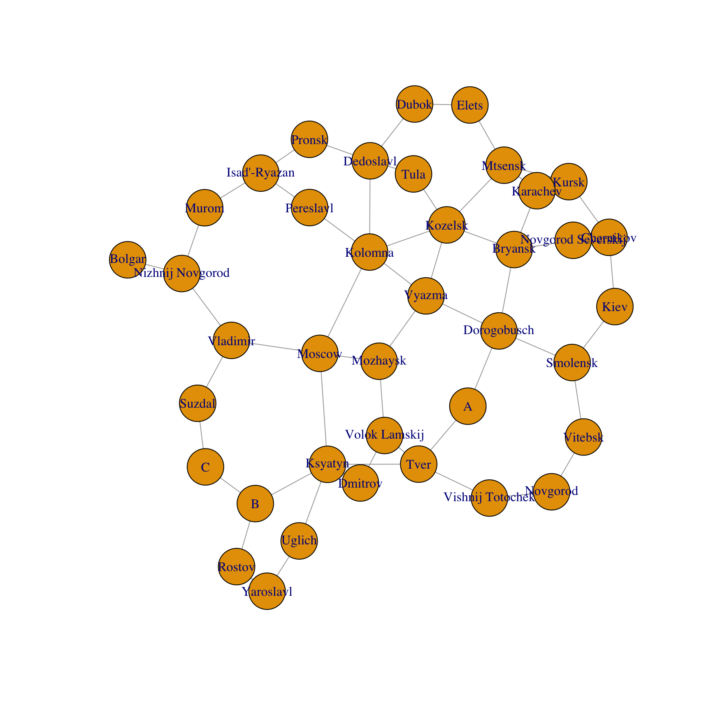

Section 9 Problem Set 9
Download an Rmd Template for this problem set.
Upload a completed, knitted .html version of this file on Moodle. If you have collaborated with others on this assignment (encouraged), please include their names here (no penalty).
9.1 Glucose-Insulin
The hormone insulin helps regulate glucose metabolism in your blood. The presene of insulin helps your body absorb excess glucose. Here \(G_t\) (glucose) and \(H_t\) (insulin) are measured as excess values (in mg per 100 ml of blood) above the steady state. \[ \begin{bmatrix} G_{t+1} \\ H_{t+1} \end{bmatrix} = \begin{bmatrix}0.9 & -0.4 \\0.1 & 0.9 \\\end{bmatrix} \begin{bmatrix} G_t \\ H_t \end{bmatrix}= \begin{bmatrix} 0.9 G_t - 0.4 H_t \\ 0.1 G_t + 0.9 H_t \end{bmatrix} \]
Here is what happens if we start at \((1,0)\) and iterate. That is we start with 1 unit excess glucose. Observe that the system spirals back to the steady state of \((0,0)\).

We can plot the indivdual glucose and insulin coordinates over time. These are the x and y coordinates of the points in the above plot. You see the insulin responding to the excess glucose, and then the glucose being absorbed by the presence of insulin, and so on …

The key point here is that the spiraling in the (x,y) plane or oscillating in the (x,t) plane corresponds to the presence of complex eigenvalues. Your job is to perform an eigen-analysis of this problem:
Use R to find the eigenvalues and eigenvectors of \(A\).
Write out the eigenvalues in the form \(\lambda = a \pm b i\) and the eigenvectors in the form \(\vec{v} = \vec{u} \pm \vec{w} i\) by filling in the values below:
\[ \begin{array}{lll} \lambda_1 = a + b i & \qquad & \lambda_2 = a - b i \\ v_1 = \begin{bmatrix} xx \\ yy \end{bmatrix} + \begin{bmatrix} zz \\ ww \end{bmatrix}i && v_2 = \begin{bmatrix} xx \\ yy \end{bmatrix} - \begin{bmatrix} zz \\ ww \end{bmatrix}i \end{array} \]
- Write the matrix \(A\) in its rotation-dilationalized form by filling in the entries below with their appropriate values.
\[ \begin{bmatrix}0.9 & -0.4 \\0.1 & 0.9 \\\end{bmatrix} = \begin{bmatrix} p_{11} & p_{12} \\ p_{21} & p_{22} \\\end{bmatrix} \begin{bmatrix} a & b \\ -b & a \\\end{bmatrix} \begin{bmatrix} q_{11} & q_{12} \\ q_{21} & q_{22} \\\end{bmatrix} \]
Use R to multiply the matrices above and show that the really do combine to give \(A\).
Find the scaling factor \(|\lambda|\) for this matrix and the angle of rotation \(\arctan(b/a)\). Give your answer in degrees. Compare your answers from part (c) to the plots above to confirm that the system is doing what the eigenvalues predict.
9.2 The Rise of Moscow
This problem is described in Network Centralities. You will analyze a network of trade routes in medieval Russia. If you were not in class on Nov 10 (or if you need it described again), I made a video last year in Module 1 explaining the Airline Network example. If you collaborate on this one with classmates (and I hope you do), please include the names of the students that you worked with.
You need the igraph package for this problem. You will need to find and install it if you did not do so earlier this semester when we looked at the Korean airport problem.
library(igraph)Russian historians often attribute the dominance and rise to power of Moscow to its strategic position on medieval trade routes (see Figure 1). Others argue that sociological and political factors aided Moscow’s rise to power, and thus Moscow did not rise to power strictly because of its strategic location on the trade routes. The figure below shows the major cities and trade routes of medieval Russia.

Use Gould’s Index to form a geographer’s opinion about this debate. Either:
- Moscow’s location was the primary reason for its rise to power, or
- Other forces must have come into play.
Here is the adjacency matrix for this transportation network into an adjacency matrix and a plot of the network.
RusCity = c("Novgorod", "Vitebsk", "Smolensk", "Kiev", "Chernikov",
"Novgorod Severskij", "Kursk", "Bryansk", "Karachev", "Kozelsk",
"Dorogobusch", "Vyazma", "A", "Tver", "Vishnij Totochek", "Ksyatyn",
"Uglich", "Yaroslavl", "Rostov", "B", "C", "Suzdal", "Vladimir",
"Nizhnij Novgorod", "Bolgar", "Isad'-Ryazan", "Pronsk", "Dubok",
"Elets", "Mtsensk", "Tula", "Dedoslavl", "Pereslavl", "Kolomna",
"Moscow", "Mozhaysk", "Dmitrov", "Volok Lamskij", "Murom")
A = rbind(c(0, 1, 0, 0, 0, 0, 0, 0, 0, 0, 0, 0, 0, 0, 1, 0, 0, 0, 0, 0,
0, 0, 0, 0, 0, 0, 0, 0, 0, 0, 0, 0, 0, 0, 0, 0, 0, 0, 0), c(1, 0,
1, 0, 0, 0, 0, 0, 0, 0, 0, 0, 0, 0, 0, 0, 0, 0, 0, 0, 0, 0, 0, 0,
0, 0, 0, 0, 0, 0, 0, 0, 0, 0, 0, 0, 0, 0, 0), c(0, 1, 0, 1, 0, 0,
0, 0, 0, 0, 1, 0, 0, 0, 0, 0, 0, 0, 0, 0, 0, 0, 0, 0, 0, 0, 0, 0,
0, 0, 0, 0, 0, 0, 0, 0, 0, 0, 0), c(0, 0, 1, 0, 1, 0, 0, 0, 0, 0,
0, 0, 0, 0, 0, 0, 0, 0, 0, 0, 0, 0, 0, 0, 0, 0, 0, 0, 0, 0, 0, 0,
0, 0, 0, 0, 0, 0, 0), c(0, 0, 0, 1, 0, 1, 1, 0, 0, 0, 0, 0, 0, 0,
0, 0, 0, 0, 0, 0, 0, 0, 0, 0, 0, 0, 0, 0, 0, 0, 0, 0, 0, 0, 0, 0,
0, 0, 0), c(0, 0, 0, 0, 1, 0, 0, 1, 0, 0, 0, 0, 0, 0, 0, 0, 0, 0,
0, 0, 0, 0, 0, 0, 0, 0, 0, 0, 0, 0, 0, 0, 0, 0, 0, 0, 0, 0,
0), c(0, 0, 0, 0, 1, 0, 0, 0, 1, 0, 0, 0, 0, 0, 0, 0, 0, 0, 0, 0,
0, 0, 0, 0, 0, 0, 0, 0, 0, 1, 0, 0, 0, 0, 0, 0, 0, 0, 0), c(0, 0,
0, 0, 0, 1, 0, 0, 1, 1, 1, 0, 0, 0, 0, 0, 0, 0, 0, 0, 0, 0, 0, 0,
0, 0, 0, 0, 0, 0, 0, 0, 0, 0, 0, 0, 0, 0, 0), c(0, 0, 0, 0, 0, 0,
1, 1, 0, 0, 0, 0, 0, 0, 0, 0, 0, 0, 0, 0, 0, 0, 0, 0, 0, 0, 0, 0,
0, 1, 0, 0, 0, 0, 0, 0, 0, 0, 0), c(0, 0, 0, 0, 0, 0, 0, 1, 0, 0,
0, 1, 0, 0, 0, 0, 0, 0, 0, 0, 0, 0, 0, 0, 0, 0, 0, 0, 0, 1, 1, 0,
0, 1, 0, 0, 0, 0, 0), c(0, 0, 1, 0, 0, 0, 0, 1, 0, 0, 0, 1, 1, 0,
0, 0, 0, 0, 0, 0, 0, 0, 0, 0, 0, 0, 0, 0, 0, 0, 0, 0, 0, 0, 0, 0,
0, 0, 0), c(0, 0, 0, 0, 0, 0, 0, 0, 0, 1, 1, 0, 0, 0, 0, 0, 0, 0,
0, 0, 0, 0, 0, 0, 0, 0, 0, 0, 0, 0, 0, 0, 0, 1, 0, 1, 0, 0,
0), c(0, 0, 0, 0, 0, 0, 0, 0, 0, 0, 1, 0, 0, 1, 0, 0, 0, 0, 0, 0,
0, 0, 0, 0, 0, 0, 0, 0, 0, 0, 0, 0, 0, 0, 0, 0, 0, 0, 0), c(0, 0,
0, 0, 0, 0, 0, 0, 0, 0, 0, 0, 1, 0, 1, 1, 0, 0, 0, 0, 0, 0, 0, 0,
0, 0, 0, 0, 0, 0, 0, 0, 0, 0, 0, 0, 0, 1, 0), c(1, 0, 0, 0, 0, 0,
0, 0, 0, 0, 0, 0, 0, 1, 0, 0, 0, 0, 0, 0, 0, 0, 0, 0, 0, 0, 0, 0,
0, 0, 0, 0, 0, 0, 0, 0, 0, 0, 0), c(0, 0, 0, 0, 0, 0, 0, 0, 0, 0,
0, 0, 0, 1, 0, 0, 1, 0, 0, 1, 0, 0, 0, 0, 0, 0, 0, 0, 0, 0, 0, 0,
0, 0, 1, 0, 1, 0, 0), c(0, 0, 0, 0, 0, 0, 0, 0, 0, 0, 0, 0, 0, 0,
0, 1, 0, 1, 0, 0, 0, 0, 0, 0, 0, 0, 0, 0, 0, 0, 0, 0, 0, 0, 0, 0,
0, 0, 0), c(0, 0, 0, 0, 0, 0, 0, 0, 0, 0, 0, 0, 0, 0, 0, 0, 1, 0,
1, 0, 0, 0, 0, 0, 0, 0, 0, 0, 0, 0, 0, 0, 0, 0, 0, 0, 0, 0,
0), c(0, 0, 0, 0, 0, 0, 0, 0, 0, 0, 0, 0, 0, 0, 0, 0, 0, 1, 0, 1,
0, 0, 0, 0, 0, 0, 0, 0, 0, 0, 0, 0, 0, 0, 0, 0, 0, 0, 0), c(0, 0,
0, 0, 0, 0, 0, 0, 0, 0, 0, 0, 0, 0, 0, 1, 0, 0, 1, 0, 1, 0, 0, 0,
0, 0, 0, 0, 0, 0, 0, 0, 0, 0, 0, 0, 0, 0, 0), c(0, 0, 0, 0, 0, 0,
0, 0, 0, 0, 0, 0, 0, 0, 0, 0, 0, 0, 0, 1, 0, 1, 0, 0, 0, 0, 0, 0,
0, 0, 0, 0, 0, 0, 0, 0, 0, 0, 0), c(0, 0, 0, 0, 0, 0, 0, 0, 0, 0,
0, 0, 0, 0, 0, 0, 0, 0, 0, 0, 1, 0, 1, 0, 0, 0, 0, 0, 0, 0, 0, 0,
0, 0, 0, 0, 0, 0, 0), c(0, 0, 0, 0, 0, 0, 0, 0, 0, 0, 0, 0, 0, 0,
0, 0, 0, 0, 0, 0, 0, 1, 0, 1, 0, 0, 0, 0, 0, 0, 0, 0, 0, 0, 1, 0,
0, 0, 0), c(0, 0, 0, 0, 0, 0, 0, 0, 0, 0, 0, 0, 0, 0, 0, 0, 0, 0,
0, 0, 0, 0, 1, 0, 1, 0, 0, 0, 0, 0, 0, 0, 0, 0, 0, 0, 0, 0,
1), c(0, 0, 0, 0, 0, 0, 0, 0, 0, 0, 0, 0, 0, 0, 0, 0, 0, 0, 0, 0,
0, 0, 0, 1, 0, 0, 0, 0, 0, 0, 0, 0, 0, 0, 0, 0, 0, 0, 0), c(0, 0,
0, 0, 0, 0, 0, 0, 0, 0, 0, 0, 0, 0, 0, 0, 0, 0, 0, 0, 0, 0, 0, 0,
0, 0, 1, 0, 0, 0, 0, 0, 1, 0, 0, 0, 0, 0, 1), c(0, 0, 0, 0, 0, 0,
0, 0, 0, 0, 0, 0, 0, 0, 0, 0, 0, 0, 0, 0, 0, 0, 0, 0, 0, 1, 0, 0,
0, 0, 0, 1, 0, 0, 0, 0, 0, 0, 0), c(0, 0, 0, 0, 0, 0, 0, 0, 0, 0,
0, 0, 0, 0, 0, 0, 0, 0, 0, 0, 0, 0, 0, 0, 0, 0, 0, 0, 1, 0, 0, 1,
0, 0, 0, 0, 0, 0, 0), c(0, 0, 0, 0, 0, 0, 0, 0, 0, 0, 0, 0, 0, 0,
0, 0, 0, 0, 0, 0, 0, 0, 0, 0, 0, 0, 0, 1, 0, 1, 0, 0, 0, 0, 0, 0,
0, 0, 0), c(0, 0, 0, 0, 0, 0, 1, 0, 1, 1, 0, 0, 0, 0, 0, 0, 0, 0,
0, 0, 0, 0, 0, 0, 0, 0, 0, 0, 1, 0, 0, 0, 0, 0, 0, 0, 0, 0,
0), c(0, 0, 0, 0, 0, 0, 0, 0, 0, 1, 0, 0, 0, 0, 0, 0, 0, 0, 0, 0,
0, 0, 0, 0, 0, 0, 0, 0, 0, 0, 0, 1, 0, 0, 0, 0, 0, 0, 0), c(0, 0,
0, 0, 0, 0, 0, 0, 0, 0, 0, 0, 0, 0, 0, 0, 0, 0, 0, 0, 0, 0, 0, 0,
0, 0, 1, 1, 0, 0, 1, 0, 0, 1, 0, 0, 0, 0, 0), c(0, 0, 0, 0, 0, 0,
0, 0, 0, 0, 0, 0, 0, 0, 0, 0, 0, 0, 0, 0, 0, 0, 0, 0, 0, 1, 0, 0,
0, 0, 0, 0, 0, 1, 0, 0, 0, 0, 0), c(0, 0, 0, 0, 0, 0, 0, 0, 0, 1,
0, 1, 0, 0, 0, 0, 0, 0, 0, 0, 0, 0, 0, 0, 0, 0, 0, 0, 0, 0, 0, 1,
1, 0, 1, 0, 0, 0, 0), c(0, 0, 0, 0, 0, 0, 0, 0, 0, 0, 0, 0, 0, 0,
0, 1, 0, 0, 0, 0, 0, 0, 1, 0, 0, 0, 0, 0, 0, 0, 0, 0, 0, 1, 0, 1,
0, 0, 0), c(0, 0, 0, 0, 0, 0, 0, 0, 0, 0, 0, 1, 0, 0, 0, 0, 0, 0,
0, 0, 0, 0, 0, 0, 0, 0, 0, 0, 0, 0, 0, 0, 0, 0, 1, 0, 0, 1,
0), c(0, 0, 0, 0, 0, 0, 0, 0, 0, 0, 0, 0, 0, 0, 0, 1, 0, 0, 0, 0,
0, 0, 0, 0, 0, 0, 0, 0, 0, 0, 0, 0, 0, 0, 0, 0, 0, 1, 0), c(0, 0,
0, 0, 0, 0, 0, 0, 0, 0, 0, 0, 0, 1, 0, 0, 0, 0, 0, 0, 0, 0, 0, 0,
0, 0, 0, 0, 0, 0, 0, 0, 0, 0, 0, 1, 1, 0, 0), c(0, 0, 0, 0, 0, 0,
0, 0, 0, 0, 0, 0, 0, 0, 0, 0, 0, 0, 0, 0, 0, 0, 0, 1, 0, 1, 0, 0,
0, 0, 0, 0, 0, 0, 0, 0, 0, 0, 0))
g=graph_from_adjacency_matrix(A,mode='undirected')
V(g)$label = RusCity
# Plot network
plot(g)
Create a vector containing the normalized Degree Centralities. See Section 17.2 for help.
Create a vector containing the Gould Index values. See Section 17.3.5 for help.
Create a table that contains Gould’s Index and Degree Centralities. See Section 17.3.4 for help. The rows should be labeled with the city names and the columns should be named by the centrality measures. Sort the table according to Gould’s Index.
Plot the network with the size of the vertices determined by Gould’s Index and the size of the label is determined by degree centrality.
Use Gould’s Index to decide whether Moscow’s dominance was solely due to its geographic location.
Compare the Gould’s Index and Degree Centrality rankings and note any interesting findings. See Section 17.3.4 for help.
9.3 Orthogonal Complements
(We will work on in class on Monday Nov 15 or possibly Wednesday Nov 17)
Here are two subspaces of \(\mathbb{R}^5\) that we have seen before. (See PS5.3 and PS6.1) \[ \mathsf{Z} = \left\{ \begin{bmatrix} x_1 \\ x_2 \\ x_3 \\ x_4 \\ x_5 \end{bmatrix} \ \bigg\vert \ x_1 + x_2 + x_3 + x_4 + x_5 = 0, x_4 = 2 x_2 \right\}, \] \[ \mathsf{F} = \left\{ \begin{bmatrix} x_1 \\ x_2 \\ x_3 \\ x_4 \\ x_5 \end{bmatrix} \ \bigg\vert \ x_3 = x_1 + x_2, x_4 = x_2 + x_3, x_5 = x_3 + x_4 \right\}. \]
Find the orthogonal complement of each subspace in \(\mathbb{R}^5\). For each example, compute \(\dim(W) + \dim(W^\perp)\).